Multi-omics Spatial CITE-Seq Human skin
Source:vignettes/spatial_citeseq_human_skin.Rmd
spatial_citeseq_human_skin.Rmd1 Dataset explanation
To run this example, we will use the Skin dataset from the article High-plex protein and whole transcriptome co-mapping at cellular resolution with spatial CITE-seq. You can download the data from here. The high-resolution microscope images are available at https://doi.org/10.6084/m9.figshare.20723680
For running this tutorial, we need to download the RNA expression matrix (GSE213264_RAW/GSM6578065_humanskin_RNA.tsv.gz) and the Protein counts matrix (GSE213264_RAW/GSM6578074_humanskin_protein.tsv.gz) while the spatial locations will be inferred from the cell ids.
2 Start Giotto
Make sure you have the Giotto package and environment installed. If you have installation problems, visit the Installation guidelines and FAQ section.
# Ensure Giotto Suite is installed
if(!"Giotto" %in% installed.packages()) {
pak::pkg_install("giotto-suite/Giotto")
}
# Ensure the Python environment for Giotto has been installed
genv_exists <- Giotto::checkGiottoEnvironment()
if(!genv_exists){
# The following command need only be run once to install the Giotto environment
Giotto::installGiottoEnvironment()
}3 Read the data
Read one of the counts matrix to extract the cell ids and create the spatial coordinates table. Here we will use the RNA matrix.
data_path <- "/path/to/data/"
x <- data.table::fread(paste0(data_path, "GSE213264_RAW/GSM6578065_humanskin_RNA.tsv.gz"))
spatial_coords <- data.frame(cell_ID = x$X)
spatial_coords <- cbind(spatial_coords,
stringr::str_split_fixed(spatial_coords$cell_ID,
pattern = "x",
n = 2))
colnames(spatial_coords)[2:3] = c("sdimx", "sdimy")
spatial_coords$sdimx <- as.integer(spatial_coords$sdimx)
spatial_coords$sdimy <- as.integer(spatial_coords$sdimy)
spatial_coords$sdimy <- spatial_coords$sdimy*(-1)Read the RNA and Protein counts matrix and transpose them. CITE-seq provide the count matrices in a cell x feature format, but we need a feature x cell matrix to create the Giotto object.
rna_matrix <- data.table::fread(paste0(data_path, "GSE213264_RAW/GSM6578065_humanskin_RNA.tsv.gz"))
rna_matrix <- rna_matrix[rna_matrix$X %in% spatial_coords$cell_ID,]
rna_matrix <- rna_matrix[match(spatial_coords$cell_ID, rna_matrix$X),]
rna_matrix <- t(rna_matrix[,-1])
colnames(rna_matrix) <- spatial_coords$cell_ID
protein_matrix <- data.table::fread(paste0(data_path, "GSE213264_RAW/GSM6578074_humanskin_protein.tsv.gz"))
protein_matrix <- protein_matrix[protein_matrix$X %in% spatial_coords$cell_ID,]
protein_matrix <- protein_matrix[match(spatial_coords$cell_ID, protein_matrix$X),]
protein_matrix <- t(protein_matrix[,-1])
colnames(protein_matrix) <- spatial_coords$cell_ID4 Create the Giotto object
Use the Giotto instructions to set the behavior of the Giotto object, such as whether you prefer to save the generated plots or only visualize them. This instructions will become the default for future plotting functions, but you can also use the functions arguments to change the saving options.
library(Giotto)
results_folder <- "/path/to/results/"
instructions <- createGiottoInstructions(save_plot = TRUE,
save_dir = results_folder,
show_plot = FALSE,
return_plot = FALSE)Create Giotto object using the RNA and Protein expression, as well as spatial positions.
my_giotto_object <- createGiottoObject(expression = list(rna = list(raw = rna_matrix),
protein = list(raw = protein_matrix)),
expression_feat = list("rna", "protein"),
spatial_locs = spatial_coords,
instructions = instructions)Add the tissue image.
my_giotto_image <- createGiottoImage(gobject = my_giotto_object,
do_manual_adj = TRUE,
scale_factor = 0.5,
mg_object = paste0(data_path, "skin.jpg"),
negative_y = TRUE)
my_giotto_object <- addGiottoImage(gobject = my_giotto_object,
images = list(my_giotto_image),
spat_loc_name = "raw")Visualize the tissue image.
spatPlot2D(my_giotto_object,
point_size = 3.5)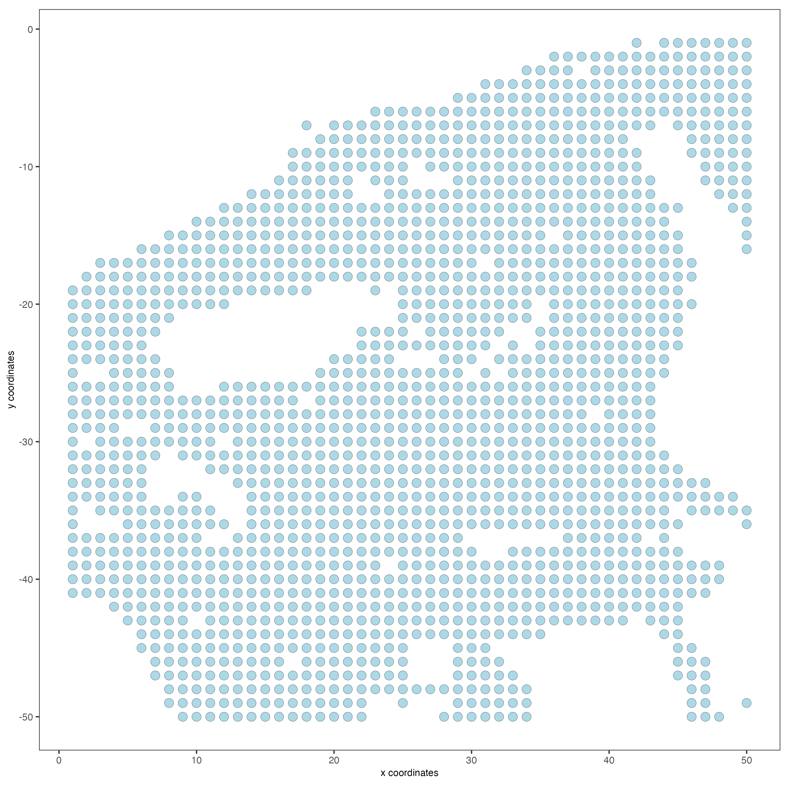
5 Processing
5.1 Filtering
We need to remove those spots that contain a very small number of features (genes or proteins), as well as features that are not expressed in enough spots across the sample.
Use the argument min_det_feats_per_cell to set the minimal number of features (genes or proteins) expected per spot. Those spots with less genes or proteins than the provided number will be removed.
Use the argument feat_det_in_min_cells to set the minimal number of spots where each gene or protein should be expressed to be considered in the dataset. Those genes or proteins expressed in less spots than the provided number will be removed.
# RNA
my_giotto_object <- filterGiotto(gobject = my_giotto_object,
spat_unit = "cell",
feat_type = "rna",
expression_threshold = 1,
feat_det_in_min_cells = 1,
min_det_feats_per_cell = 1)
# Protein
my_giotto_object <- filterGiotto(gobject = my_giotto_object,
spat_unit = "cell",
feat_type = "protein",
expression_threshold = 1,
feat_det_in_min_cells = 1,
min_det_feats_per_cell = 1)5.2 Normalization
Normalize the gene or protein counts by cell, then use the argument scalefactor to set the scale factor to use after library size normalization. The default value is 6000, but you can use a different one.
# RNA
my_giotto_object <- normalizeGiotto(gobject = my_giotto_object,
spat_unit = "cell",
feat_type = "rna",
norm_methods = "standard",
scalefactor = 10000,
verbose = TRUE)
# Protein
my_giotto_object <- normalizeGiotto(gobject = my_giotto_object,
spat_unit = "cell",
feat_type = "protein",
scalefactor = 6000,
verbose = TRUE)5.3 Statistics
Add cell and feature statistics (optional). These values can be used as Quality control, you usually expect to have enough genes or proteins per spot, but the minimal number depends on the experiment design and technology used.
# RNA
my_giotto_object <- addStatistics(gobject = my_giotto_object,
spat_unit = "cell",
feat_type = "rna")
# Protein
my_giotto_object <- addStatistics(gobject = my_giotto_object,
spat_unit = "cell",
feat_type = "protein",
expression_values = "normalized")6 Dimension Reduction
6.1 Principal component analysis (PCA)
The Principal component Analysis will help to reduce the number of dimensions in the dataset. Although the calculation of highly variable features (HVF) is very often part for the RNA processing, this dataset showed better results when using all the genes and proteins available.
The screeplot will show how much of the variance of your dataset is explain by each Principal Component. Usually this helps to estimate the number of Principal Components that you should consider for downstream steps.
# RNA
my_giotto_object <- runPCA(gobject = my_giotto_object,
spat_unit = "cell",
feat_type = "rna",
expression_values = "normalized",
reduction = "cells",
name = "rna.pca")
# Protein
my_giotto_object <- runPCA(gobject = my_giotto_object,
spat_unit = "cell",
feat_type = "protein",
expression_values = "normalized",
scale_unit = TRUE,
center = FALSE,
method = "factominer")7 Clustering
7.1 Uniform manifold approximation projection (UMAP)
After running the PCA, UMAP allows you to visualize the dataset in 2D.
# RNA
my_giotto_object <- runUMAP(gobject = my_giotto_object,
spat_unit = "cell",
feat_type = "rna",
expression_values = "normalized",
reduction = "cells",
dimensions_to_use = 1:10,
dim_reduction_name = "rna.pca")
# Protein
my_giotto_object <- runUMAP(gobject = my_giotto_object,
spat_unit = "cell",
feat_type = "protein",
expression_values = "normalized",
dimensions_to_use = 1:10)7.2 Create nearest network
createNearestNetwork() calculates the nearest neighbors to each spot based on their gene or protein expression. There are two methods available for the calculation, sNN (default) and kNN, You can also use the parameters dimensions_to_use to set how many dimensions from the PCA will be used for the network calculation and how many neighbors (k) to calculate.
# RNA
my_giotto_object <- createNearestNetwork(gobject = my_giotto_object,
spat_unit = "cell",
feat_type = "rna",
type = "sNN",
dim_reduction_to_use = "pca",
dim_reduction_name = "rna.pca",
dimensions_to_use = 1:10,
k = 20)
# Protein
my_giotto_object <- createNearestNetwork(gobject = my_giotto_object,
spat_unit = "cell",
feat_type = "protein",
type = "sNN",
name = "protein_sNN.pca",
dimensions_to_use = 1:10,
k = 20)7.3 Find Leiden clusters
Once you have calculated the spots network, we can cluster the spots based on their similarity. By default, doLeidenCluster uses a resolution of 1, but you can change this value, which usually ranges from 0 (lowest resolution) to 1, but can go further if a higher resolution is needed.
# RNA
my_giotto_object <- doLeidenCluster(gobject = my_giotto_object,
spat_unit = "cell",
feat_type = "rna",
nn_network_to_use = "sNN",
name = "leiden_clus",
resolution = 1)
# Protein
my_giotto_object <- doLeidenCluster(gobject = my_giotto_object,
spat_unit = "cell",
feat_type = "protein",
nn_network_to_use = "sNN",
network_name = "protein_sNN.pca",
name = "leiden_clus",
resolution = 1)7.4 Plot PCA
# RNA
plotPCA(gobject = my_giotto_object,
spat_unit = "cell",
feat_type = "rna",
dim_reduction_name = "rna.pca",
cell_color = "leiden_clus",
title = "RNA PCA")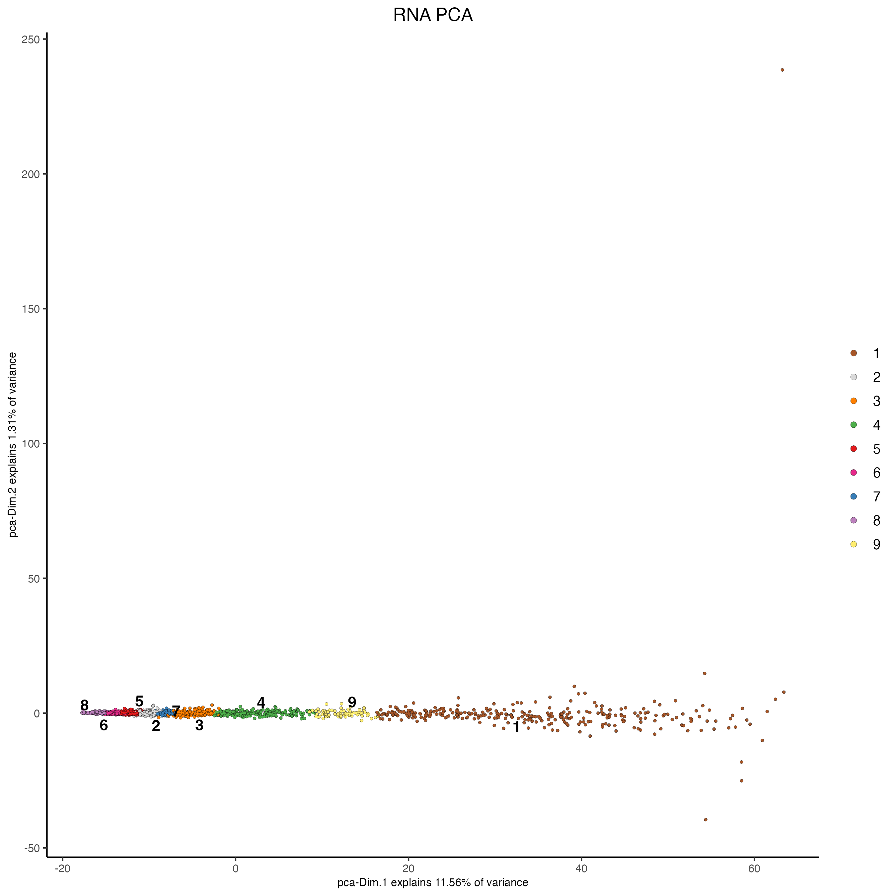
# Protein
plotPCA(gobject = my_giotto_object,
spat_unit = "cell",
feat_type = "protein",
dim_reduction_name = "protein.pca",
cell_color = "leiden_clus",
title = "Protein PCA")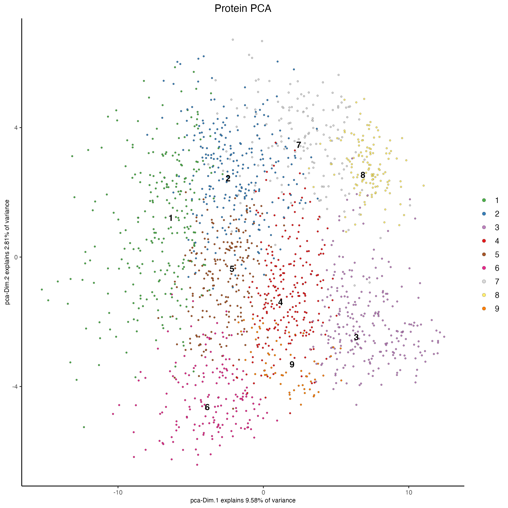
7.5 Plot UMAP
# RNA
plotUMAP(gobject = my_giotto_object,
spat_unit = "cell",
feat_type = "rna",
cell_color = "leiden_clus",
point_size = 2,
title = "RNA Uniform Manifold Approximation & Projection (UMAP)",
axis_title = 12,
axis_text = 10 )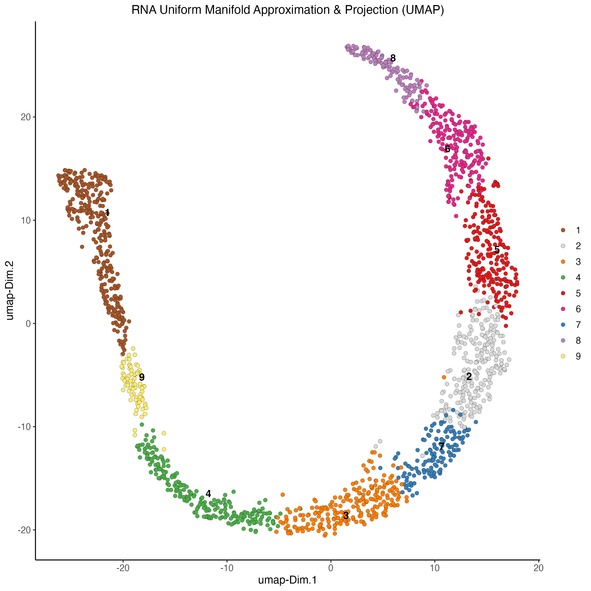
# Protein
plotUMAP(gobject = my_giotto_object,
spat_unit = "cell",
feat_type = "protein",
cell_color = "leiden_clus",
dim_reduction_name = "protein.umap",
point_size = 2,
title = "Protein Uniform Manifold Approximation & Projection (UMAP)",
axis_title = 12,
axis_text = 10 )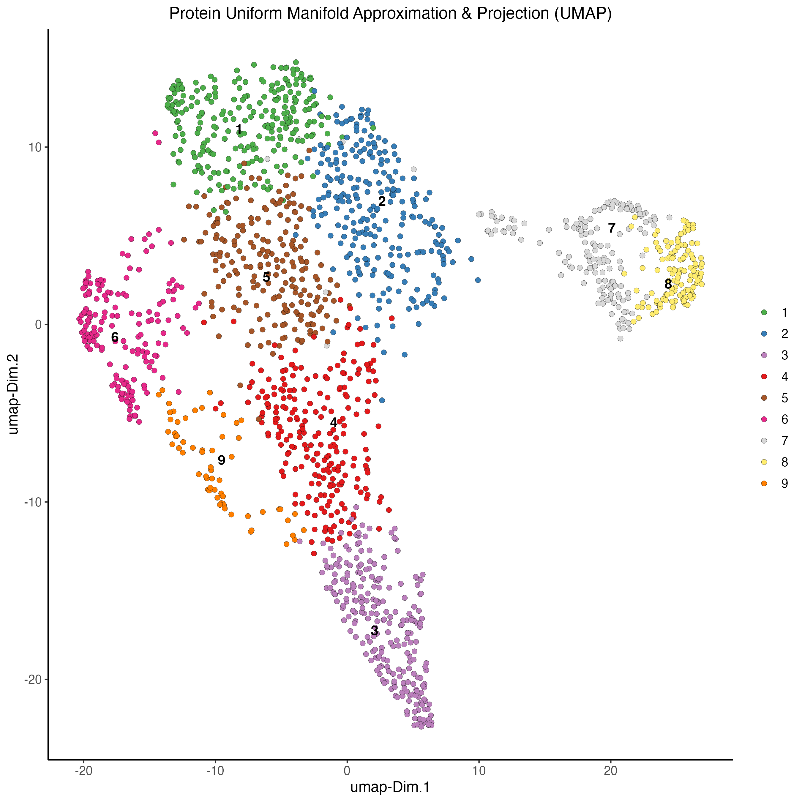
7.6 Plot spatial locations by cluster
# RNA
spatPlot2D(my_giotto_object,
show_image = TRUE,
point_size = 3.5,
cell_color = "leiden_clus",
title = "RNA Leiden clustering")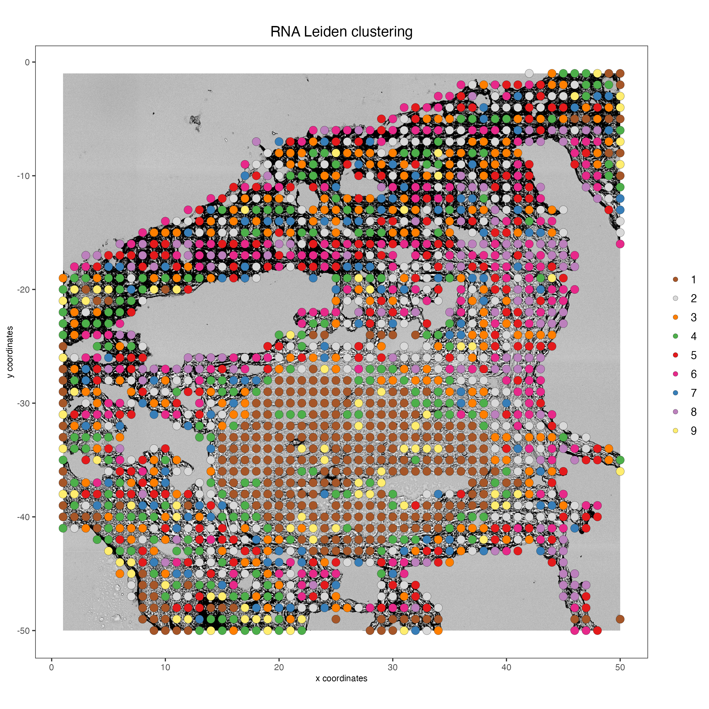
# Protein
spatPlot2D(my_giotto_object,
spat_unit = "cell",
feat_type = "protein",
cell_color = "leiden_clus",
point_size = 3.5,
show_image = TRUE,
title = "Protein Leiden clustering")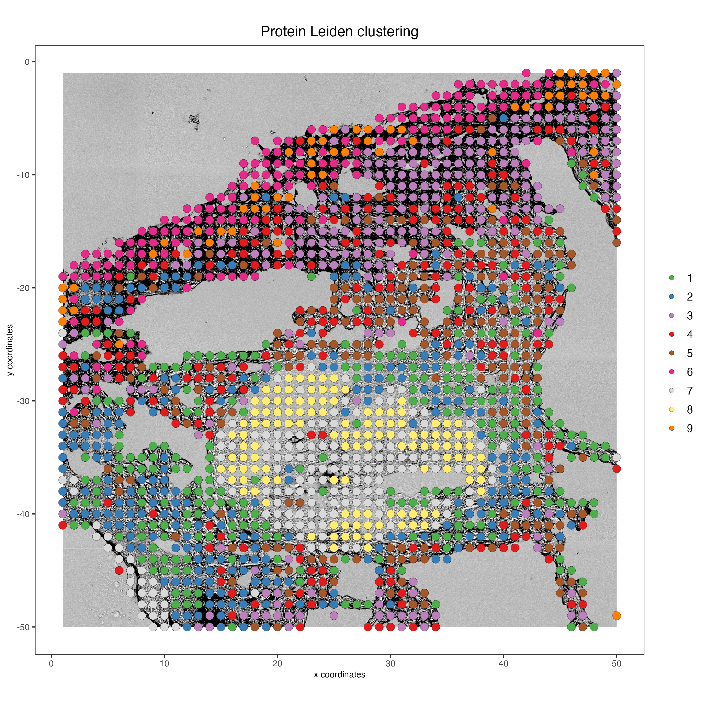
8 Multi-omics integration
The Weighted Nearest Neighbors allows to integrate the modalities acquired from the same sample. WNN will re-calculate the clustering to provide an integrated umap and leiden clustering. For running WNN, the Giotto object must contain the results of running PCA calculation for each modality.
8.1 Create nearest network
First, we need a nearest network using the kNN method; if you used this method in the clustering step instead of sNN, you can skip this step.
my_giotto_object <- createNearestNetwork(gobject = my_giotto_object,
spat_unit = "cell",
feat_type = "rna",
type = "kNN",
dim_reduction_name = "rna.pca",
name = "rna_kNN.pca",
dimensions_to_use = 1:10,
k = 20)
my_giotto_object <- createNearestNetwork(gobject = my_giotto_object,
spat_unit = "cell",
feat_type = "protein",
type = "kNN",
name = "protein_kNN.pca",
dimensions_to_use = 1:10,
k = 20)8.2 Calculate WNN
runWNN will calculate the weight of each modality for each spot and will store the result in the Giotto object under the multiomics slot.
my_giotto_object <- runWNN(my_giotto_object,
modality_1 = "rna",
modality_2 = "protein",
pca_name_modality_1 = "rna.pca",
pca_name_modality_2 = "protein.pca",
k = 20)8.3 Create integrated UMAP
Using the weights matrix from the previous step, an integrated kNN and UMAP will be calculated, which reflects the integration of the two omics.
my_giotto_object <- runIntegratedUMAP(my_giotto_object,
modality1 = "rna",
modality2 = "protein")8.4 Calculate Leiden clusters
The final step is calculating the Leiden clusters again, using the integrated information from the previous step. These clusters consider the weight of each modality per spot.
my_giotto_object <- doLeidenCluster(gobject = my_giotto_object,
spat_unit = "cell",
feat_type = "rna",
nn_network_to_use = "kNN",
network_name = "integrated_kNN",
name = "integrated_leiden_clus",
resolution = 0.7)8.5 Plot integrated UMAP
plotUMAP(gobject = my_giotto_object,
spat_unit = "cell",
feat_type = "rna",
cell_color = "integrated_leiden_clus",
dim_reduction_name = "integrated.umap",
point_size = 2.5,
title = "Integrated UMAP using Integrated Leiden clusters",
axis_title = 12,
axis_text = 10)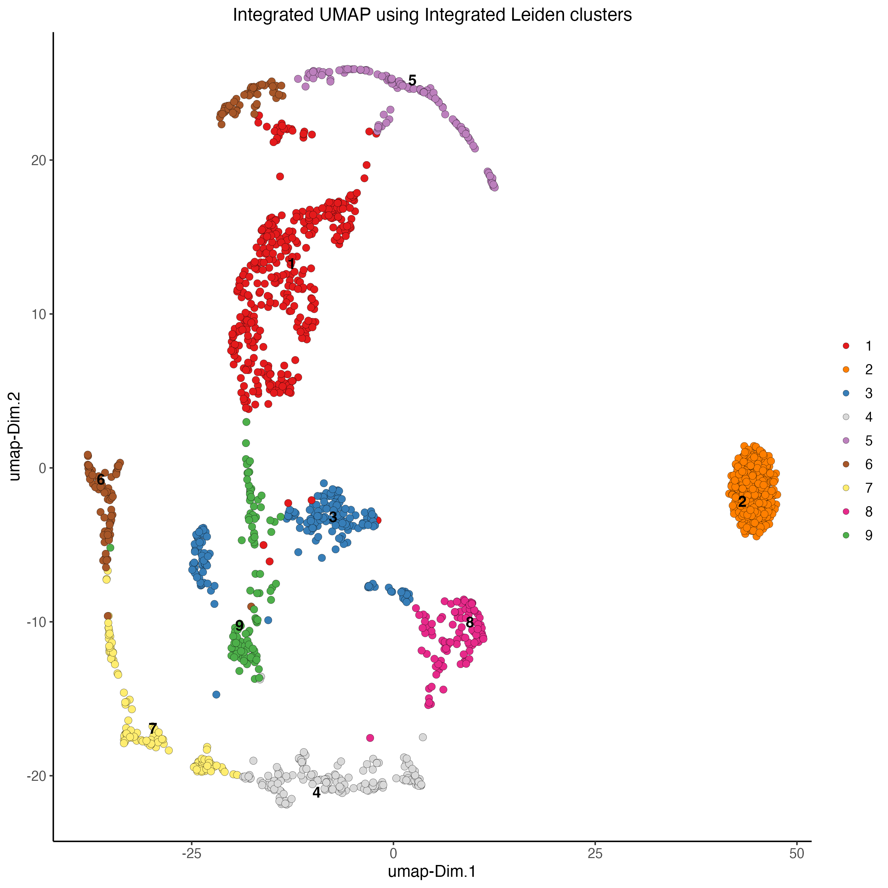
8.6 Plot integrated spatial locations by cluster
spatPlot2D(my_giotto_object,
spat_unit = "cell",
feat_type = "rna",
cell_color = "integrated_leiden_clus",
point_size = 3.5,
show_image = TRUE,
title = "Integrated Leiden clustering")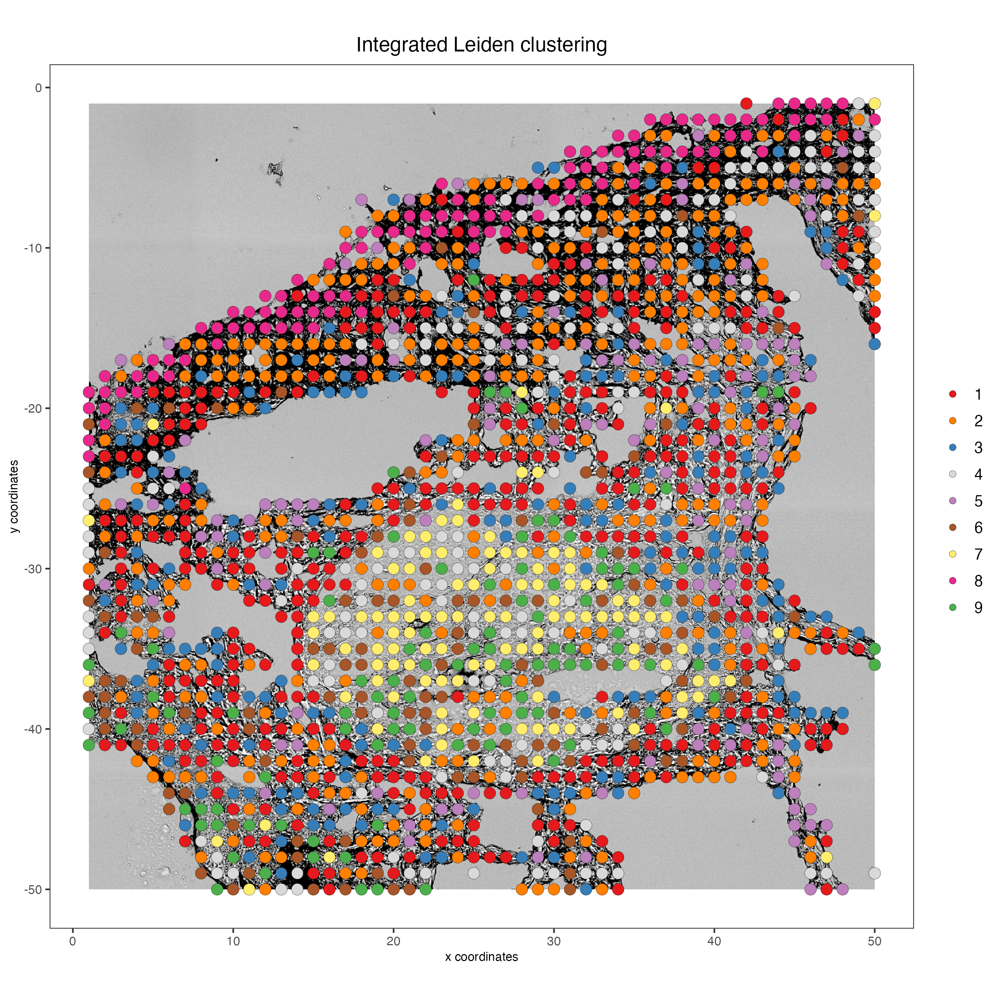
9 Calculate spatially variable genes
my_giotto_object <- createSpatialNetwork(gobject = my_giotto_object,
method = "kNN",
k = 6,
maximum_distance_knn = 5,
name = "spatial_network")
rank_spatialfeats <- binSpect(my_giotto_object,
bin_method = "rank",
calc_hub = TRUE,
hub_min_int = 5,
spatial_network_name = "spatial_network")
spatFeatPlot2D(my_giotto_object,
expression_values = "scaled",
feats = rank_spatialfeats$feats[1:6],
cow_n_col = 2,
point_size = 1.5)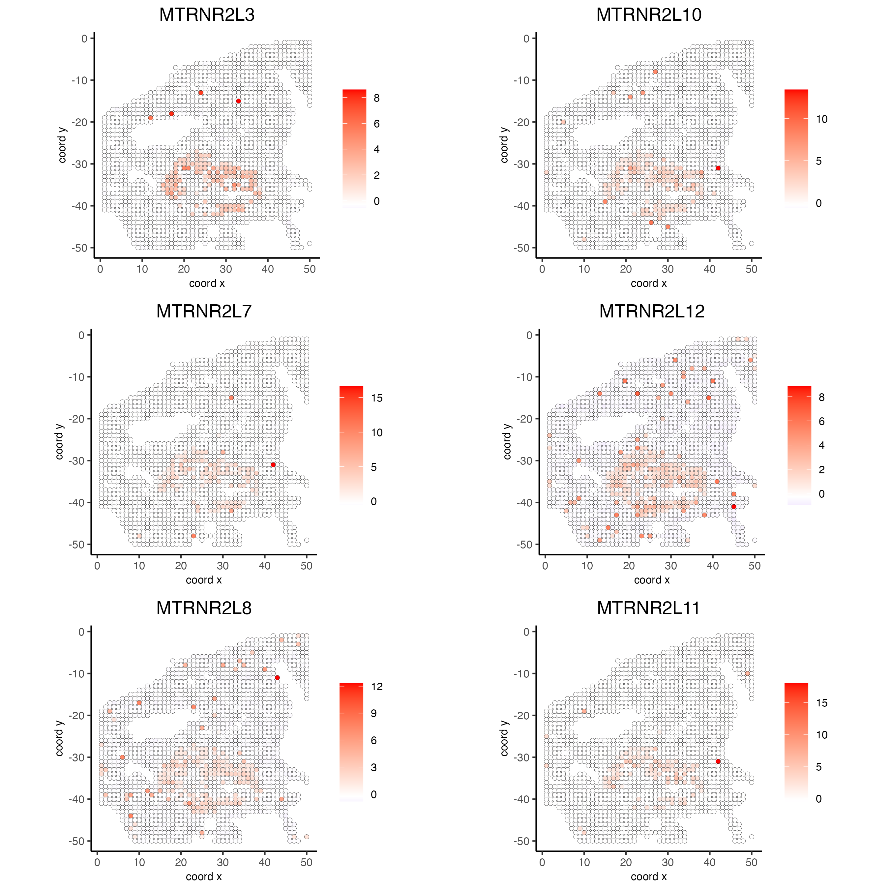
9.1 Spatially correlated genes
# 3.1 cluster the top 500 spatial genes into 20 clusters
ext_spatial_genes <- rank_spatialfeats[1:500,]$feats
# here we use existing detectSpatialCorGenes function to calculate pairwise distances between genes (but set network_smoothing=0 to use default clustering)
spat_cor_netw_DT <- detectSpatialCorFeats(my_giotto_object,
method = "network",
spatial_network_name = "spatial_network",
subset_feats = ext_spatial_genes)
# 3.3 identify potential spatial co-expression
spat_cor_netw_DT <- clusterSpatialCorFeats(spat_cor_netw_DT,
name = "spat_netw_clus",
k = 3)
# visualize clusters
heatmSpatialCorFeats(my_giotto_object,
spatCorObject = spat_cor_netw_DT,
use_clus_name = "spat_netw_clus",
heatmap_legend_param = list(title = NULL),
save_param = list(base_height = 6,
base_width = 8,
units = "cm"))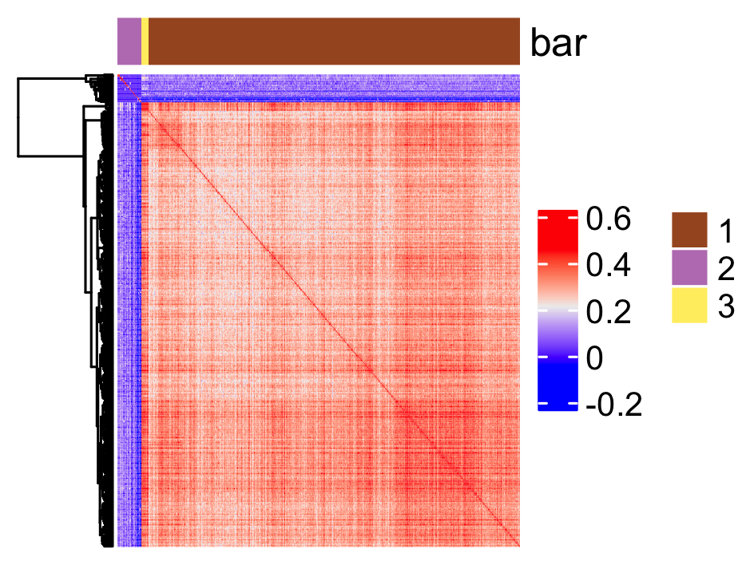
10 Metagenes/co-expression modules
# 3.4 create metagenes / co-expression modules
cluster_genes <- getBalancedSpatCoexpressionFeats(spat_cor_netw_DT,
maximum = 30)
my_giotto_object <- createMetafeats(my_giotto_object,
feat_clusters = cluster_genes,
name = "cluster_metagene")
spatCellPlot(my_giotto_object,
spat_enr_names = "cluster_metagene",
cell_annotation_values = as.character(c(1:7)),
point_size = 1,
cow_n_col = 3)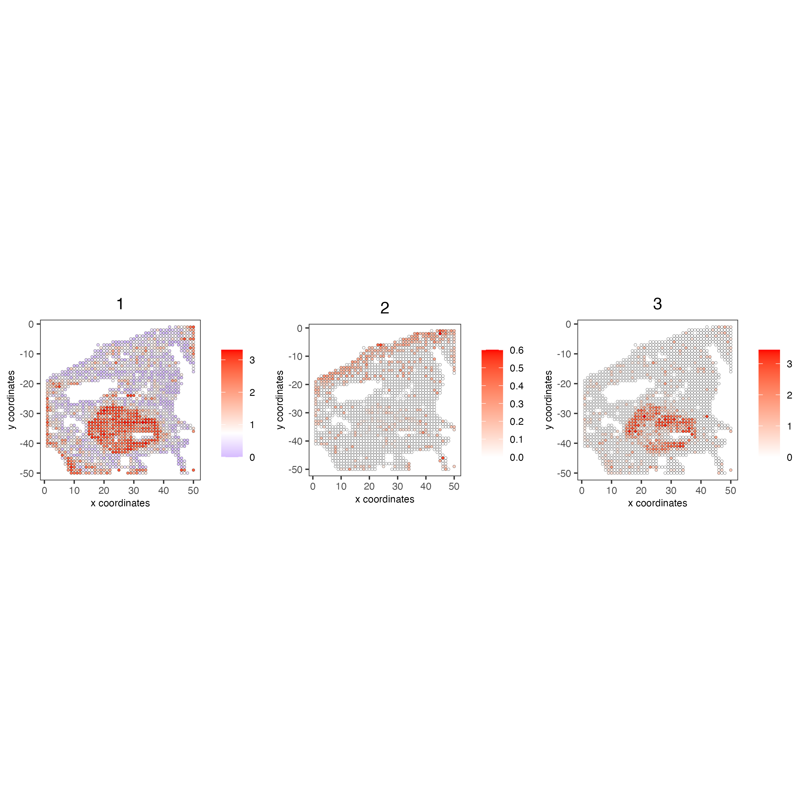
11 Spatially informed clustering
my_spatial_genes = names(cluster_genes)
my_giotto_object <- runPCA(gobject = my_giotto_object,
feats_to_use = my_spatial_genes,
name = "custom_pca")
my_giotto_object <- runUMAP(my_giotto_object,
dim_reduction_name = "custom_pca",
dimensions_to_use = 1:20,
name = "custom_umap")
my_giotto_object <- createNearestNetwork(gobject = my_giotto_object,
dim_reduction_name = "custom_pca",
dimensions_to_use = 1:20,
k = 3,
name = "custom_NN")
my_giotto_object <- doLeidenCluster(gobject = my_giotto_object,
network_name = "custom_NN",
resolution = 0.1,
n_iterations = 1000,
name = "custom_leiden")
spatPlot2D(my_giotto_object,
show_image = FALSE,
cell_color = "custom_leiden",
cell_color_code = c("#eb4034",
"#5877e8",
"#ebd834",
"#9beb34",
"#6fab6a",
"#24703f",
"#58e8cb",
"#58d0e8",
"#eb8f34",
"#7f58e8",
"#d758e8",
"#e85892"),
point_size = 3.5,
background_color = "black",
title = "Spatially informed clustering")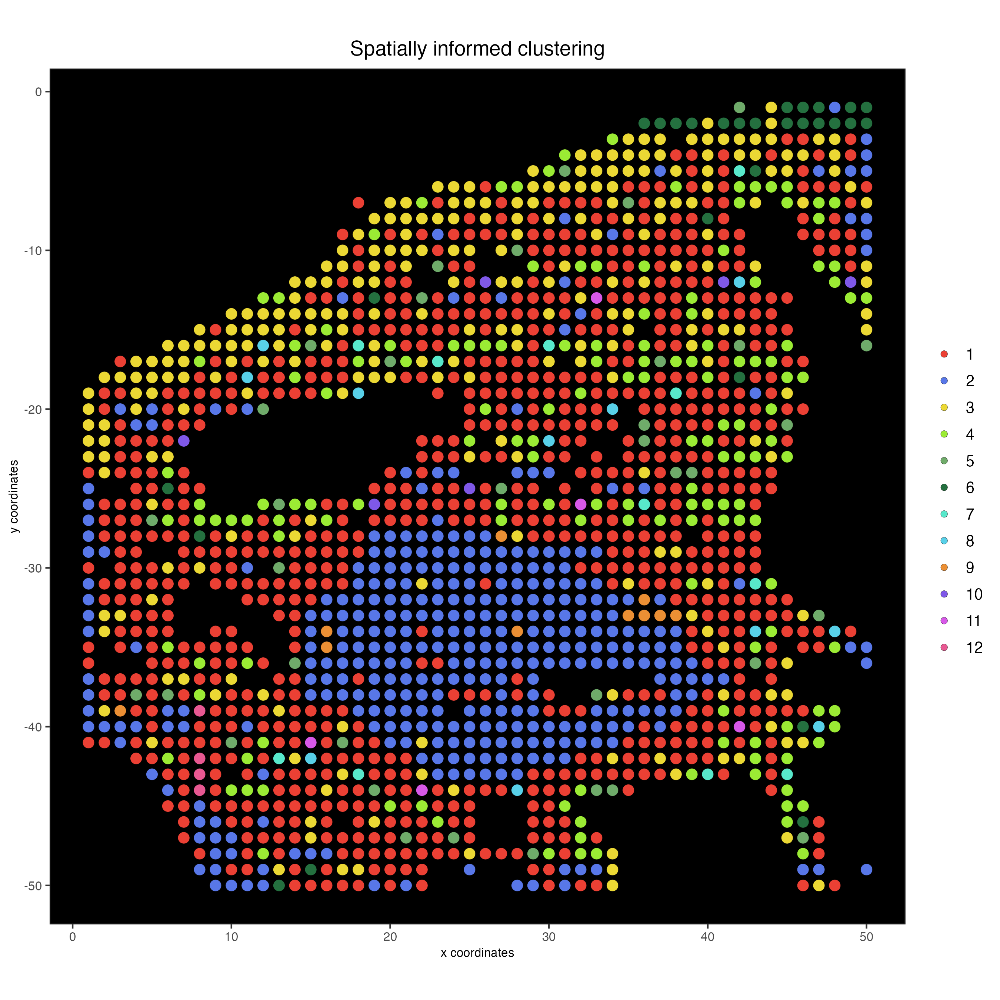
12 Session Info
R version 4.3.2 (2023-10-31)
Platform: aarch64-apple-darwin20 (64-bit)
Running under: macOS Sonoma 14.2.1
Matrix products: default
BLAS: /System/Library/Frameworks/Accelerate.framework/Versions/A/Frameworks/vecLib.framework/Versions/A/libBLAS.dylib
LAPACK: /Library/Frameworks/R.framework/Versions/4.3-arm64/Resources/lib/libRlapack.dylib; LAPACK version 3.11.0
locale:
[1] en_US.UTF-8/en_US.UTF-8/en_US.UTF-8/C/en_US.UTF-8/en_US.UTF-8
time zone: America/New_York
tzcode source: internal
attached base packages:
[1] stats graphics grDevices utils datasets methods base
other attached packages:
[1] Giotto_4.0.3 GiottoClass_0.1.3
loaded via a namespace (and not attached):
[1] colorRamp2_0.1.0 bitops_1.0-7 rlang_1.1.3 magrittr_2.0.3
[5] clue_0.3-65 GetoptLong_1.0.5 GiottoUtils_0.1.5 matrixStats_1.2.0
[9] compiler_4.3.2 png_0.1-8 systemfonts_1.0.5 vctrs_0.6.5
[13] stringr_1.5.1 shape_1.4.6 pkgconfig_2.0.3 SpatialExperiment_1.12.0
[17] crayon_1.5.2 fastmap_1.1.1 backports_1.4.1 magick_2.8.3
[21] XVector_0.42.0 labeling_0.4.3 utf8_1.2.4 rmarkdown_2.25
[25] ragg_1.2.7 xfun_0.42 zlibbioc_1.48.0 beachmat_2.18.1
[29] GenomeInfoDb_1.38.6 jsonlite_1.8.8 flashClust_1.01-2 DelayedArray_0.28.0
[33] BiocParallel_1.36.0 terra_1.7-71 irlba_2.3.5.1 parallel_4.3.2
[37] cluster_2.1.6 R6_2.5.1 RColorBrewer_1.1-3 stringi_1.8.3
[41] reticulate_1.35.0 GenomicRanges_1.54.1 estimability_1.5 iterators_1.0.14
[45] Rcpp_1.0.12 SummarizedExperiment_1.32.0 knitr_1.45 R.utils_2.12.3
[49] FNN_1.1.4 IRanges_2.36.0 igraph_2.0.2 Matrix_1.6-5
[53] tidyselect_1.2.0 rstudioapi_0.15.0 abind_1.4-5 yaml_2.3.8
[57] doParallel_1.0.17 codetools_0.2-19 lattice_0.22-5 tibble_3.2.1
[61] Biobase_2.62.0 withr_3.0.0 evaluate_0.23 circlize_0.4.16
[65] pillar_1.9.0 MatrixGenerics_1.14.0 foreach_1.5.2 checkmate_2.3.1
[69] DT_0.32 stats4_4.3.2 dbscan_1.1-12 generics_0.1.3
[73] RCurl_1.98-1.14 S4Vectors_0.40.2 ggplot2_3.4.4 munsell_0.5.0
[77] scales_1.3.0 gtools_3.9.5 xtable_1.8-4 leaps_3.1
[81] glue_1.7.0 emmeans_1.10.0 scatterplot3d_0.3-44 tools_4.3.2
[85] GiottoVisuals_0.1.4 data.table_1.15.0 ScaledMatrix_1.10.0 mvtnorm_1.2-4
[89] Cairo_1.6-2 cowplot_1.1.3 grid_4.3.2 colorspace_2.1-0
[93] SingleCellExperiment_1.24.0 GenomeInfoDbData_1.2.11 BiocSingular_1.18.0 cli_3.6.2
[97] rsvd_1.0.5 textshaping_0.3.7 fansi_1.0.6 S4Arrays_1.2.0
[101] ComplexHeatmap_2.18.0 dplyr_1.1.4 uwot_0.1.16 gtable_0.3.4
[105] R.methodsS3_1.8.2 digest_0.6.34 BiocGenerics_0.48.1 SparseArray_1.2.4
[109] ggrepel_0.9.5 htmlwidgets_1.6.4 FactoMineR_2.9 rjson_0.2.21
[113] farver_2.1.1 htmltools_0.5.7 R.oo_1.26.0 lifecycle_1.0.4
[117] multcompView_0.1-9 GlobalOptions_0.1.2 MASS_7.3-60.0.1